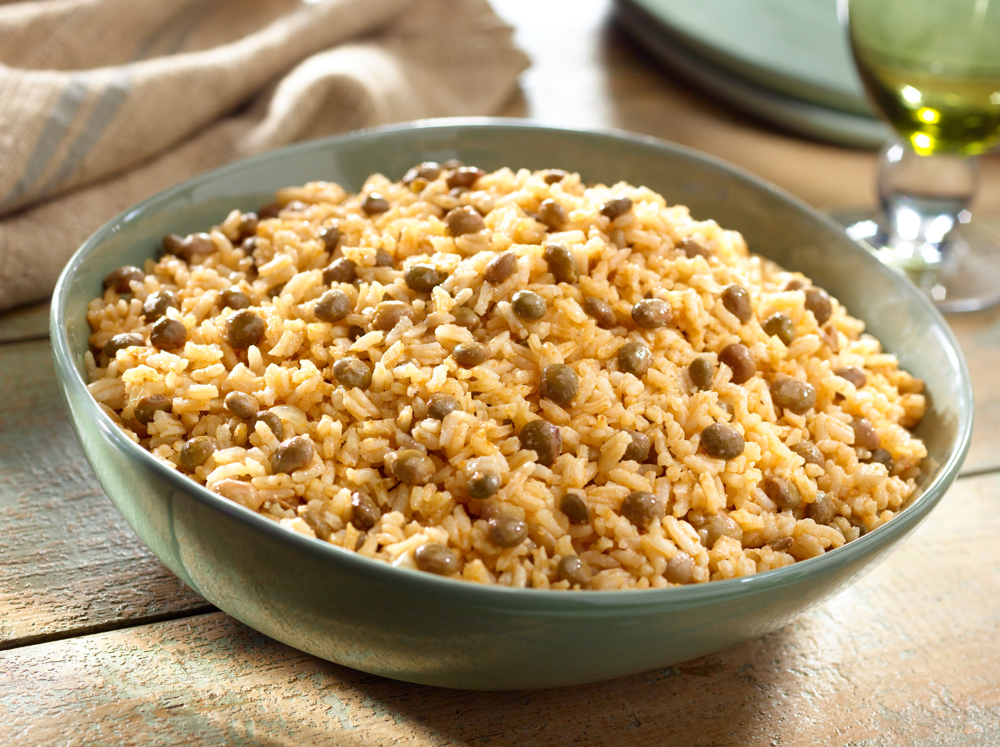

Home
Rice with Pigeon Peas and Coconut

One Pot meal
Flavorful one pot meal with pigeon peas, rice with coconut full of protein, carbs and veggies single bite.
Filling meal goes with any side dish.
Ingredients:
- 1tbsp Goya vegetable oil
- 1/4 onion, finely chopped
- 1 tbsp Goya minced garlic
- 2 tsp chopped fresh cilantro
- 1/4 tsp dried oregano
- 1 tbsp Goya Tomato paste
- 2 tablespoons chopped cilantro
- 1/4 dried oregano
- 1 tbsp Goya tomato paste
- 2 cans Goya Green pigeon Peas
- 2 cups water mixed with 1 packet GOYA® Chicken Flavored Bouillon
- 1 can Goya Coconut milk
- 1 tsp salt
- 2 1/2 cup Canilla extra long grain rice
Steps
- Heat oil in medium, heavy pot over medium-high heat. Add onion, garlic, cilantro and oregano. Cook, stirring occasionally, until onions soften, about 5 minutes. Add tomato paste; cook, stirring, until paste begins to caramelize, about 2 minutes more.
- Add pigeon peas, chicken bouillon mixture, coconut milk and salt to pot; bring to boil. Stir in rice; return water to boil. Boil 1 minute. Reduce heat to medium. Simmer, without stirring, until water completely evaporates. Stir rice from bottom up. Reduce heat to lowest setting; cover pot. Cook, covered, until rice is completely tender, about 20 minutes.
- Fluff rice with fork; serve.